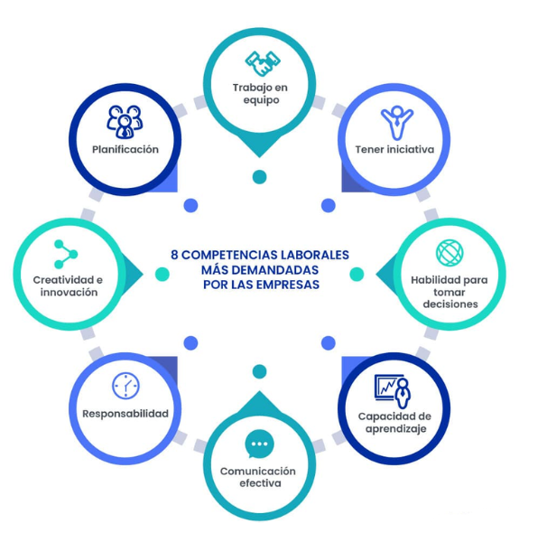
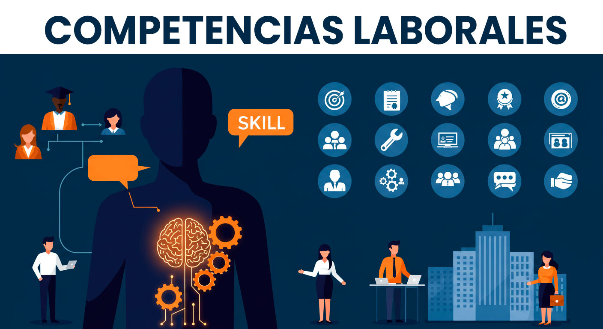
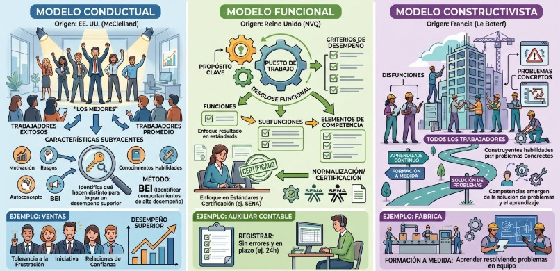

LAS COMPETENCIAS
Punto de partida de la Gestión Humana: conceptos, objetivos, características, clasificación, modelos teóricos y competencias profesionales del psicólogo.
Las Competencias
Las competencias pueden entenderse como el conjunto integrado de conocimientos, habilidades, actitudes y comportamientos que una persona pone en juego en una situación real de trabajo para desempeñarse de manera efectiva.
"En términos más técnicos, Spencer y Spencer (1993) las definen como una característica subyacente en un individuo que se relaciona causalmente con un desempeño efectivo o superior en un puesto de trabajo, tomando como referencia un criterio determinado."
En otras palabras, no se trata únicamente de saber hacer algo, sino de contar con una base de motivos, rasgos, autoconcepto y conocimientos que, puestos en acción, permiten a la persona alcanzar los resultados esperados en su rol dentro de la organización.
Diferentes Definiciones de Competencias
Aunque existen diversas definiciones, todas coinciden en que una competencia implica la capacidad de una persona para movilizar y aplicar conocimientos, habilidades, actitudes y recursos personales con el propósito de responder eficazmente ante determinadas situaciones.
Como capacidad de desempeño
Capacidad de una persona para realizar una actividad o tarea de manera adecuada, integrando los conocimientos y habilidades necesarios para alcanzar un resultado.
Desde el enfoque educativo
Implica la capacidad de utilizar de manera integrada conocimientos, habilidades, actitudes y valores para resolver problemas y enfrentar situaciones reales en diferentes contextos. Por tanto, no se limita a poseer conocimientos, sino a saber aplicarlos.
Desde la perspectiva laboral
Conjunto de características, conocimientos, habilidades y comportamientos que permiten a una persona desempeñarse eficazmente en un puesto de trabajo y alcanzar los resultados esperados.
Como comportamiento observable
Se manifiesta mediante comportamientos que pueden observarse y evaluarse, estos permiten diferenciar un desempeño eficaz de uno incompetente.
Como integración de saberes
También puede considerarse como la articulación de diferentes tipos de saber:
Objetivos de las competencias
Las competencias tienen como objetivo principal identificar, desarrollar y fortalecer los conocimientos, habilidades, actitudes y comportamientos que permiten a una persona desempeñarse de manera efectiva en diversas situaciones laborales. En el ámbito organizacional, buscan conectar las capacidades de los empleados con las necesidades y metas de la empresa. Entre los objetivos más destacados de las competencias se encuentran:
Definir las habilidades que una persona necesita para realizar adecuadamente las funciones y responsabilidades de su puesto.
Reconocer las competencias que ya posee una persona y aquellas que necesitan ser reforzadas a través de capacitación, formación o experiencia.
Facilitar que los conocimientos, habilidades y actitudes se traduzcan en comportamientos observables que ayuden a alcanzar resultados.
Utilizar las competencias como guía para procesos como selección, evaluación del desempeño, capacitación, desarrollo y promoción del talento humano.
Desarrollar habilidades que permitan responder de manera flexible a cambios, problemas y nuevas exigencias del entorno laboral.
Alinear las capacidades de las personas con las funciones de sus puestos y con las metas de la organización.
Facilitar el aprendizaje continuo y el fortalecimiento de las habilidades necesarias para el crecimiento de las personas dentro de la organización.
Características de las Competencias
Integrales
Combinan diferentes elementos como conocimientos, habilidades, actitudes, valores y comportamientos, no se limitan al conocimiento teórico.
Aplicables
Se evidencian cuando la persona utiliza lo que sabe para actuar y resolver situaciones concretas. Por esto, conocer algo no significa necesariamente ser competente.
Orientadas al desempeño
Se relacionan con la capacidad de alcanzar resultados adecuados y realizar determinadas actividades de manera eficaz y eficiente.
Contextuales
Se manifiesta de acuerdo con las características y exigencias de una situación específica, la persona adapta sus conocimientos y habilidades al contexto en el que se encuentra.
Observables y evaluables
Aunque algunos de sus componentes son internos, las competencias pueden identificarse mediante comportamientos y resultados que permiten valorar el nivel de desempeño de una persona.
Pueden desarrollarse y fortalecerse
No son necesariamente estáticas, pueden adquirirse, perfeccionarse y modificarse mediante la educación, la capacitación, la práctica y la experiencia.
Requieren adaptación
Permiten responder a situaciones nuevas o cambiantes, por lo que implican flexibilidad para modificar estrategias y encontrar soluciones según las circunstancias.
Orientadas al logro de objetivos
Su aplicación busca alcanzar determinados propósitos, solucionar problemas o producir resultados satisfactorios dentro de un contexto determinado.
Características de las competencias
Diagrama gráfico que sintetiza las características fundamentales de las competencias laborales.
Clasificaciones de las competencias
Las clasificaciones nos ayudan a organizar las capacidades que una persona necesita para desenvolverse en distintos contextos, así como a identificar cuáles son esenciales para un buen desempeño general, cuáles se pueden transferir entre diferentes trabajos y cuáles están directamente vinculadas a una ocupación específica.
1. Competencias básicas
Son las capacidades fundamentales que permiten a una persona desenvolverse en diferentes ámbitos de la vida, incluyendo el educativo, social y laboral. Constituyen una base para adquirir nuevos conocimientos y desarrollar otras competencias.
Entre ellas se encuentran:
Lectura y comprensión, escritura y comunicación, razonamiento matemático, capacidad para interpretar información, manejo básico de tecnologías.
Permiten comprender instrucciones, comunicarse, aprender y resolver situaciones básicas necesarias para desenvolverse adecuadamente en el trabajo y en otros contextos.
Hace referencia a la educación básica como sumar, restar y leer
Competencias laborales sociales:Se refiere al comportamiento de la persona frente a procesos de socialización, como por ejemplo los valores, creencias, actitudes.
2. Competencias genéricas o transversales
Son capacidades que pueden aplicarse en diferentes ocupaciones, cargos y contextos laborales. No dependen exclusivamente de una profesión específica, sino que facilitan un desempeño adecuado en una amplia variedad de situaciones.
Entre ellas se encuentran:
Trabajo en equipo, comunicación efectiva. liderazgo, resolución de problemas, toma de decisiones, organización y planificación, adaptabilidad, orientación al logro.
Permiten que una persona pueda transferir sus capacidades a diferentes funciones y situaciones laborales. Por ejemplo, la comunicación efectiva es importante tanto para un psicólogo como para un docente, un administrador o un trabajador de servicio al cliente.
3. Competencias específicas o técnicas
Son aquellas relacionadas directamente con una ocupación, profesión, cargo o actividad determinada. Incluyen los conocimientos y habilidades técnicas necesarios para realizar funciones concretas y alcanzar los resultados esperados.
Entre ellas se encuentran:
Aplicación de pruebas psicológicas por parte de un psicólogo, manejo de programas especializados, elaboración de informes técnicos, operación de maquinaria específica, aplicación de procedimientos propios de una profesión.
Permiten ejecutar correctamente las funciones particulares de un puesto de trabajo y responder a las exigencias técnicas de una ocupación.
Y ahora desde el enfoque de Spencer y Spencer (1993), las competencias también pueden clasificarse según su relación con el nivel de desempeño.
4. Competencias de umbral
Son las características esenciales que una persona necesita para alcanzar un nivel mínimo de desempeño adecuado en un puesto. Generalmente incluyen conocimientos y habilidades necesarias para realizar correctamente el trabajo, pero no necesariamente permiten distinguir entre un trabajador promedio y uno de desempeño superior.
5. Competencias diferenciadoras
Son aquellas características que permiten distinguir a las personas con un desempeño superior de aquellas con un desempeño promedio. Pueden estar relacionadas con aspectos como la orientación al logro, la iniciativa, la motivación, la capacidad de influencia o determinados comportamientos.
Clasificación de competencias
Esquema gráfico de la clasificación de competencias.

🔍 Clic para ampliar
🔍 Clic para ampliarModelos para determinar las competencias
Origen: Estados Unidos, con David McClelland como pionero (años 70), y luego desarrollado por Boyatzis y Spencer & Spencer.
Idea central: Las competencias son las características subyacentes de una persona (motivos, rasgos, autoconcepto, conocimientos, habilidades) que están causalmente relacionadas con un desempeño superior en un puesto de trabajo. Este modelo parte de estudiar a los trabajadores más exitosos ("los mejores") para identificar qué hacen distinto de los trabajadores promedio, y esas diferencias se convierten en las competencias a buscar y desarrollar.
Características:
- Se enfoca en las personas de alto desempeño, no en el puesto en abstracto.
- Usa entrevistas de incidentes críticos (BEI - Behavioral Event Interview) para identificar comportamientos concretos.
- Da mucha importancia a factores como la motivación, los rasgos de personalidad y el autoconcepto, no solo al conocimiento técnico.
Origen: Reino Unido, vinculado a los sistemas de certificación laboral (NVQ - National Vocational Qualifications).
Idea central: Parte del puesto de trabajo y no de la persona. Se analiza cuál es el propósito o función clave de un cargo dentro de la organización, y luego se desglosa ese propósito en funciones más específicas hasta llegar a elementos de competencia con criterios de desempeño verificables. Es decir: se pregunta "¿qué resultados debe lograr esta persona para que la función se cumpla?", no "¿qué hace esta persona en su día a día?".
Características:
- Se centra en resultados y desempeños mínimos requeridos (estándares), no en atributos personales.
- Usa un método llamado "análisis funcional", que va de lo general a lo específico (propósito clave → funciones → subfunciones → elementos de competencia).
- Es la base de muchos sistemas de normalización y certificación de competencias laborales (como el SENA en Colombia, por ejemplo).
Origen: Francia, desarrollado especialmente por Guy Le Boterf.
Idea central: Las competencias no son fijas ni predeterminadas (ni por los mejores trabajadores, ni por el puesto), sino que se construyen a partir de la relación entre la persona, su entorno laboral y su proceso de aprendizaje. Es decir, tanto la persona con menos habilidades como el contexto de trabajo son tomados en cuenta a la vez: las competencias emergen de la solución de problemas y disfunciones que se dan en la organización.
Características:
- No separa a los "mejores" de los "promedio": incluye a toda la población laboral, incluyendo a quienes tienen dificultades, porque de ahí surgen aprendizajes valiosos para diseñar la formación.
- Combina el diagnóstico de problemas concretos de la empresa (disfunciones) con las capacidades que hace falta desarrollar para resolverlos.
- Da gran peso a la formación y el aprendizaje continuo, no a una foto fija de la competencia.
video como ejemplo del sub-proceso: Modelos para determinar las competencias. Si no se puede el video entonces esta foto:
Modelos para determinar las competencias
Foto / Infografía explicativa de los modelos de competencias.

🔍 Clic para ampliarCompetencias del Psicólogo
Imagen: Competencias del Psicólogo
Ilustración de una sesión de terapia psicológica, donde una profesional escucha y acompaña a una mujer que expresa sus emociones y pensamientos. La imagen representa el apoyo emocional, la comunicación y el bienestar mental..
Imagen: Competencias del Psicólogo Organizacional
Esquema de competencias aplicadas al ámbito organizacional y de talento humano.